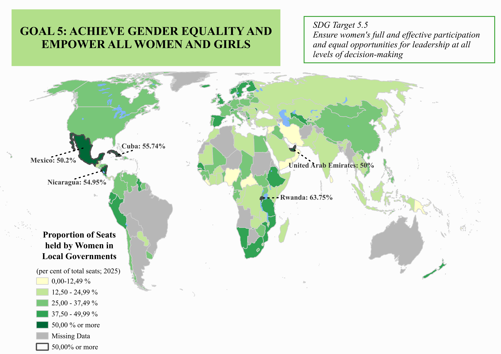
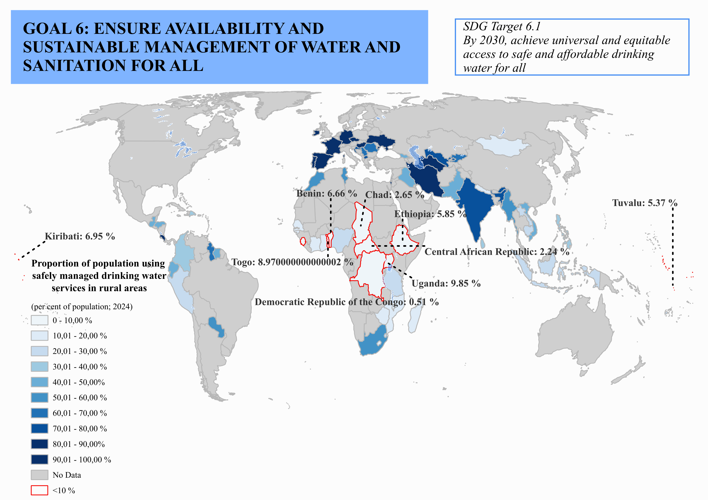

This project focused on using official UN data for two different sustainable development goals, namely SDGs 5 and 6. This was done by creating both static and interactive maps of their respective target indicators, which was the percentage of women holding seats in local governments for SDGTI 5.5.1 (b), and the percentage of rural population using safely managed water services for SDGTI 6.1.1. The data was cleaned in Excel, processed using QGIS, and displayed using Leaflet.
UN has a list of goals which should be implemented to achieve sustainable development worldwide, called the sustainable development goals (SDGs). Each of these goals has targets, which represent different ways to achieve the sustainability goal, and indicators, which are a measure of the targets. This project aims to showcase different SDG indicators on a global map, to provide an image showcasing how the world as a whole is progressing, but also to highlight countries which are doing extremely well, and those which might require UN assistance. The chosen indicators were SDGI 5.5.1 (b), which is the percentage of women holding seats in local governments in 2025, and SDGI 6.1.1, which is the percentage of rural population with access to safely managed drinking water in 2024.
It was found that the majority of the countries in the world have less than 37,5% of women representatives in their local governments, as reported in 2025 data. This trend is slightly better in Scandinavian countries, Iceland, the UK, Spain, Ethiopia, southern Africa, and western South America. On the other hand, the statistics are especially low in central Africa, the Middle East, Eastern Europe and Asia. The countries which are doing especially well, having 50% or more of women representatives in their local governments, are: UAE, Mexico, Nicaragua, Cuba and Rwanda, where Rwanda is the best with 63,75% women representatives. However, it must be kept in mind that these numbers do not necessarily reflect the position and rights of women in the country, and merely represent their number.
The water accessibility data set from 2024 had a lot of missing data. However, the general trendline was that Europe is doing extremely well in providing safe drinking water to its rural areas, followed by India, Iran and Turkmenistan, while the more enclosed Asian countries, central African countries, and small island countries suffer from a water accesibility shortage. The countries with critically low water accesibility, defined as <10% for the rural population, are: Uganda, Togo, Kiribati, Benin, Ethiopia, Tuvalu, Chad, Central African Republic, and the Democratic Republic of Congo. DRC's data shows a critical shortage, with only 0,51% of the rural population having access to safe drinking water, and should be provided with immediate assistance to whichever extent possible. However, since this data set is missing a lot of countries data, which might be a result of them not knowing how to properly calculate the unit of measurement, efforts should be made to improve the data set, as well as fix any potential miscalculations in the present data, since some countries might be underreporting, and some overreporting their data due to using a different formula or variables.


This project was very useful for learning the basics of QGIS. It also taught me a lot about data finding, data processing, and data management, as well as the fundamentals of mapping. It also helped me to visualise the UN global statistics in a more detailed manner than I've considered before, and helped put the world data into perspective. Working with different data sets helped me to have more hands-on practice, as well as experiment with slightly different data types.
Future improvements could include a time development map, rather than the data set for a fixed year. Or, for a SDG target with multiple indicators, a map could be shown which displays an overlay or an average value of them in an easily comprehensible manner, to allow for the visualisation of the target progression itself, rather than the indicator. This could then be expanded towards making the same generalisation for the SDG itself by using different target data sets.